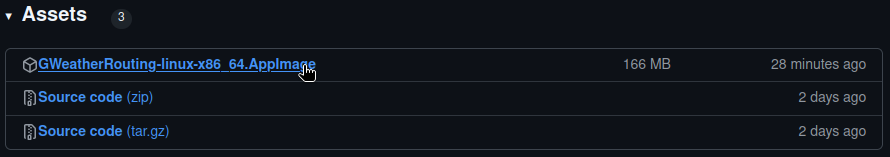
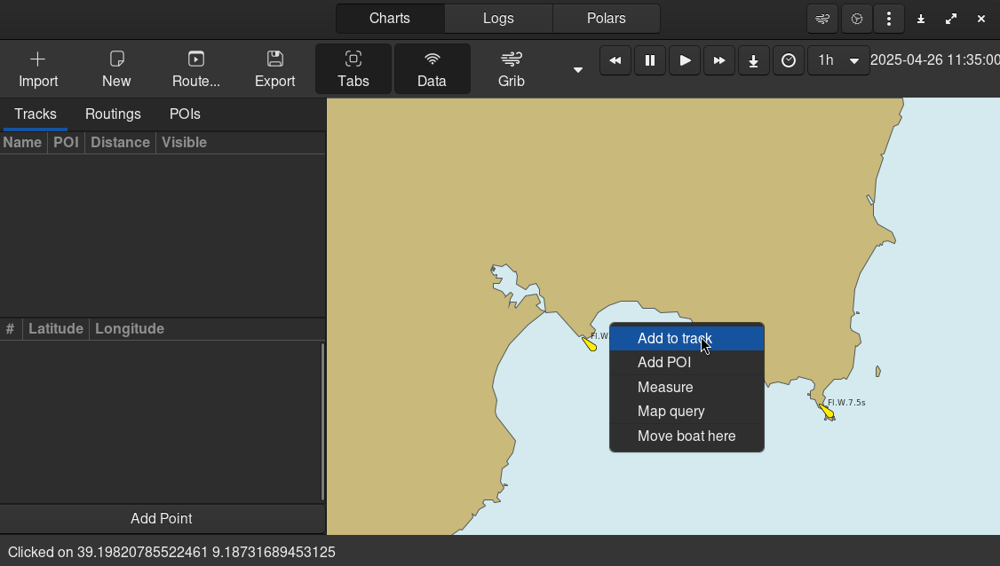
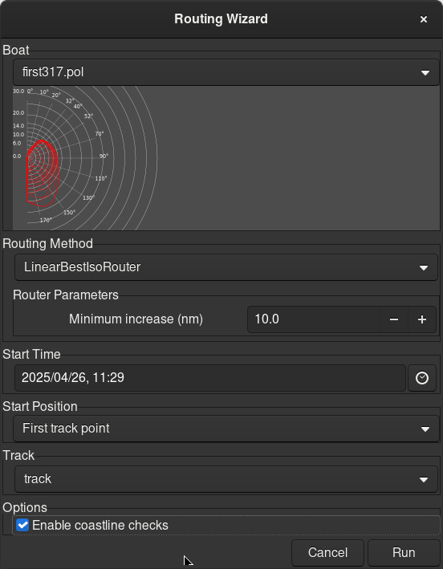
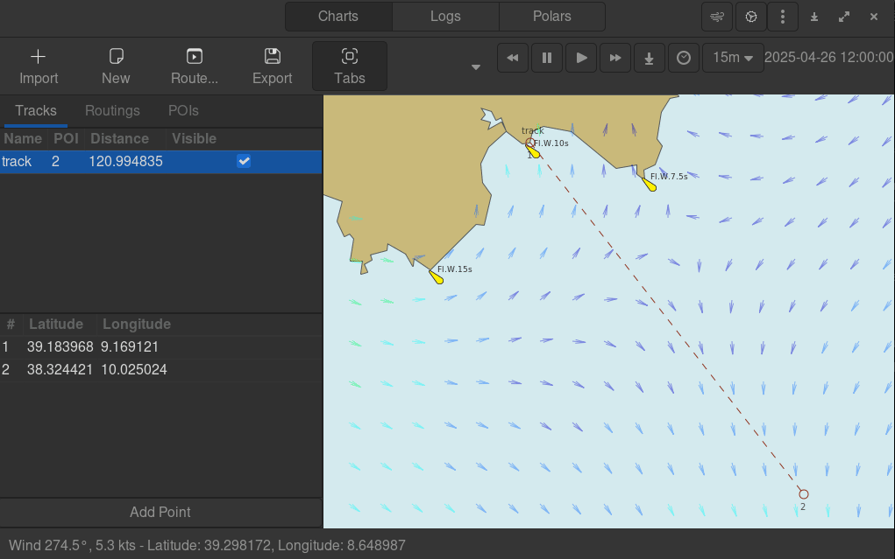

Quickstart#
Installation#
Download the latest release appimage from github releases. At the moment we only offer an appimage build for linux x86_64, but we will provide soon builds for other systems.
You can install gweatherrouting from source source, following the instructions that you can find in the repository README.md.
After downloading the appimage, make it executable:
chmod +x GWeatherRouting-linux-x86_64.AppImage
First run#
During the first run, gww will ask you to download some files:
Base world countourn lines
OpenSeaMap data: contains lighthouses, buoys, and other maritime signals taken from the openseamap project
After these download, gww is ready to be used.

Downloading a grib file#
Click on the grib manager button
Select a region, right-click and download
After closing the grib manager, the grib file is loaded into the map. You can freely inspect the wind for different time slots.
Track creation and editing#
To create a track and add a point to it, right-click in a point of the map and press “Add to Track”. This will create a new track, adding the clicked point to it.
In order to add new track points, right-click on another point of the map and press “Add to Track” as before. On the left pane, you will se the list of the tracks, and the list of track point for each track. You can:
Remove or Export tracks, by right-clicking on a track
Remove, Reorder or Duplicate a track point, by right-clicking on a track point
Create a routing#
Now that we have a track and a grib, creating a routing is very easy. Just click on “Route…” button. Select a polar file, tune other settings and press run.
The software will calculate the isochrones tree, finding the fastest route. After calculation, the route is displayed in red. The green point on the routing shows the boat position at different times. You can navigate the simulation through time, using time control’s buttons.
